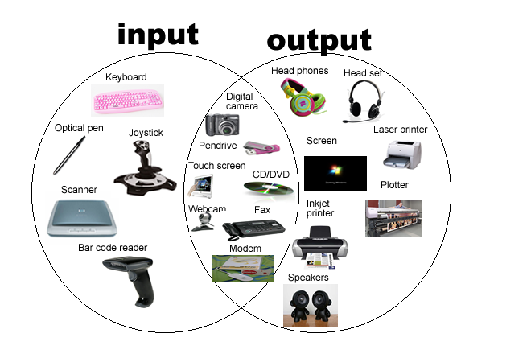

The address space of the processor can contain devices other than memory. These are input/output devices (I/O devices, also known as peripherals ) and are used by the processor to communicate with the external world. Some examples are serial controllers that communicate with keyboards, mice, modems, etc.; parallel I/O devices that control some external subsystem; or disk-drive controllers, video and audio controllers, or network interfaces.
-There are three main ways in which data may be exchanged with the external world:
The processor accepts or delivers data at times convenient to it (the processor)
External events control the processor by requesting the current program be suspended and the external event be serviced. An external device will interrupt the processor (assert an interrupt control line into the processor), at which time the processor will suspend the current task (program) and begin executing an interrupt service routine. The service of an interrupt may involve transferring data from input to memory, or from memory to output.
DMA allows data to be transferred from I/O devices to memory directly without the continuous involvement of the processor. DMA is used in high-speed systems, where the rate of data transfer is important. Not all processors support DMA.